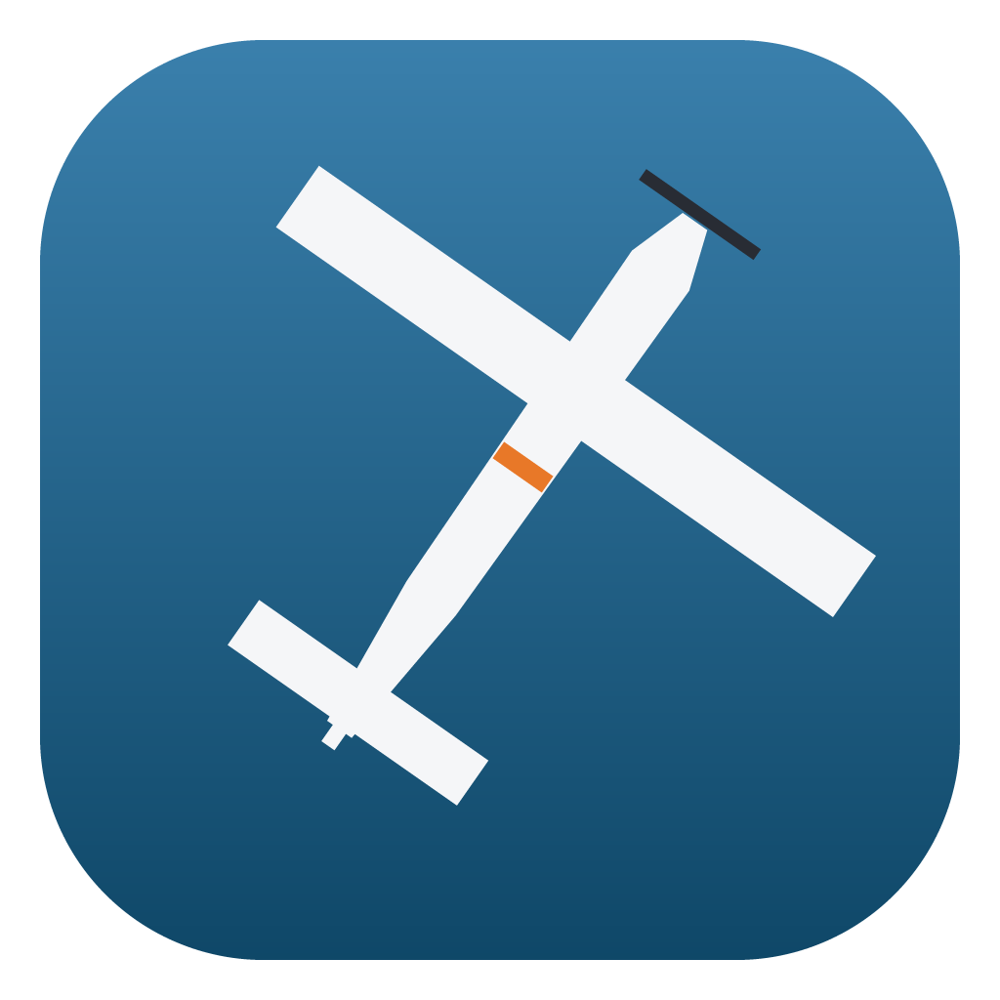
Early development · not playable yetAn independent Rust + wgpu runtime that loads your own X-Plane 10.51 installation and is checked against the original, pixel by pixel. No game content is included.
Download for macOSSource on GitHubProgressScreenshots
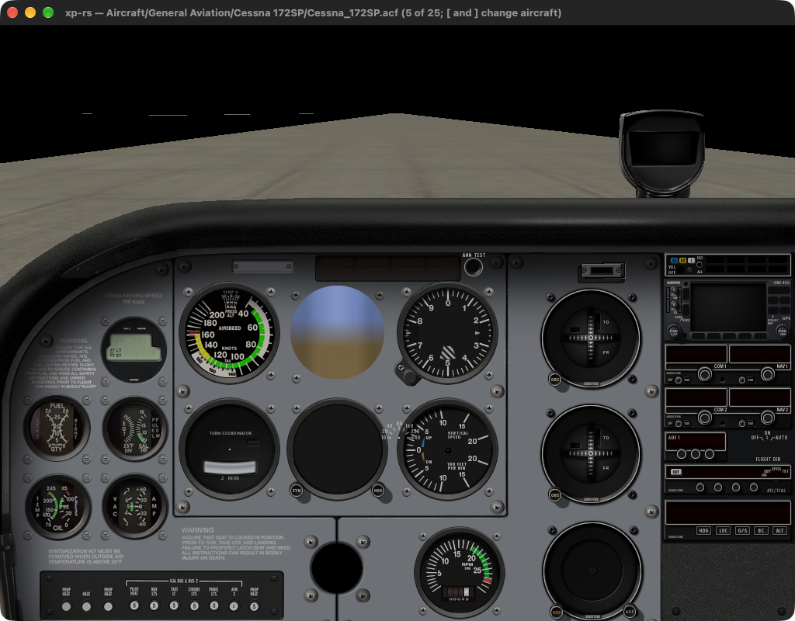
The port's own window today: the default Cessna's 2-D panel on runway 34R at KSEA. Instrument faces are in place; needles, sky and terrain are not.
The two percentages are a self-assessed estimate, not a measurement: each subsystem below is weighted by how much of the simulator it is, and scored by hand. “Verified” counts only what has been compared with the running original's own output.
| Subsystem | Weight | Implemented | Verified | State |
|---|---|---|---|---|
| Flight model | 25 | 2 % | 2 % | Wing strip build-up reproduces the original's own report line for line; no forces, engine, gear or integration yet. |
| 3-D rendering | 20 | 8 % | 2 % | Forward lighting with the original's sun; no sky, shadows, scattering or fog. |
| World & scenery | 12 | 5 % | 3 % | Runway outlines in the original's own coordinate frame; no terrain, taxiways or buildings. |
| Content formats | 10 | 70 % | 15 % | ACF, OBJ8, apt.dat, PNG, DDS read across the whole install; DSF terrain only framed. |
| 2-D cockpit panel | 10 | 20 % | 10 % | All 76 Cessna instrument faces placed from the original's own table; no needles or displays. |
| Systems, datarefs, avionics | 8 | 2 % | 2 % | GPS airport database reproduces the original's count exactly (19 186). |
| Menus & dialogs | 7 | 55 % | 25 % | Menu bar and all drop-downs from the original's own menu file, laid out and drawn by its decompiled rules. Every item does something: all 13 views and the camera moves/zoom, screenshot, quit, check-mark toggles, and the original's key bindings. The 19 windows open with the original's frame and title; their controls are not ported yet. Open-aircraft dialog works. |
| Sound, plugins, network, ATC | 5 | 0 % | 0 % | Not started. |
| Loading screen | 3 | 85 % | 85 % | Picture, text, bands and progress bar match the original. |
99.0 % of pixels identical, 99.7 % within 8 of 255. The picture area is identical everywhere.
Bar 99.8 % within 4 of 255. Drop-downs land on the original's pixels: frame edges, text, separators, key shortcuts.
19 186 airports added — the number the original logs — from 34 744 in the install.
All 94 lines the original prints about the Cessna's eight wings' strips — areas, chords, incidences — reproduced verbatim.
The ported lat/lon → scene transform lands runway 34R within a metre of where the original puts it.
Every rendering change is recorded as a frame of the port, taken with the original's own camera, and compared with the original's frame. Newest first.
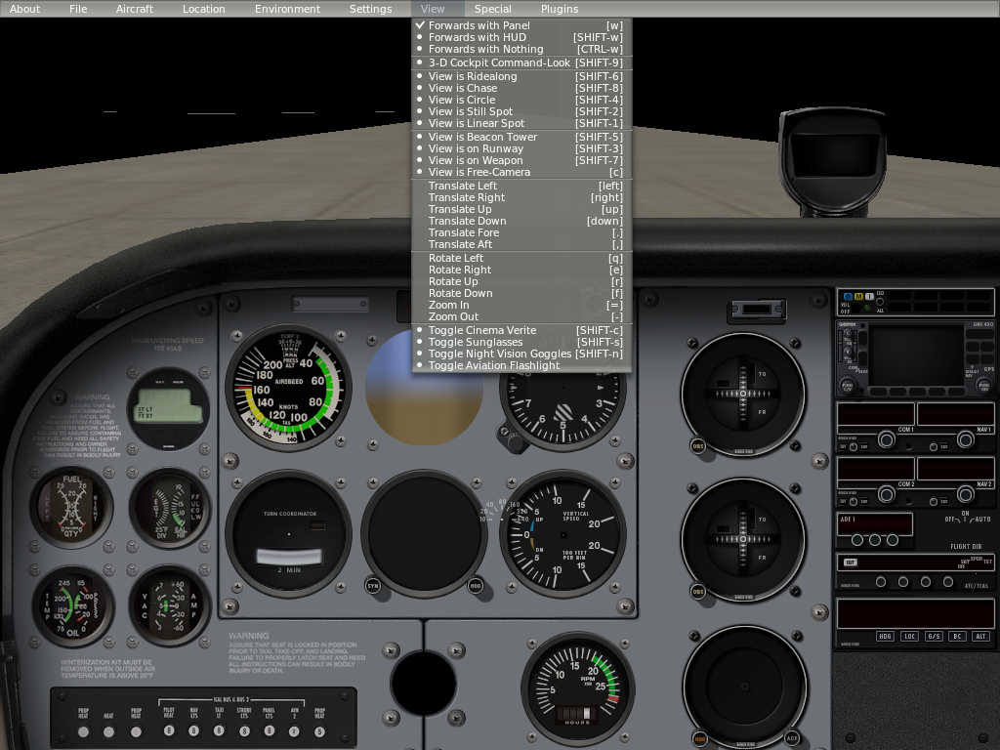
View menu, laid out and drawn by the original's own rules: check mark on the current view, key shortcuts from its key file.
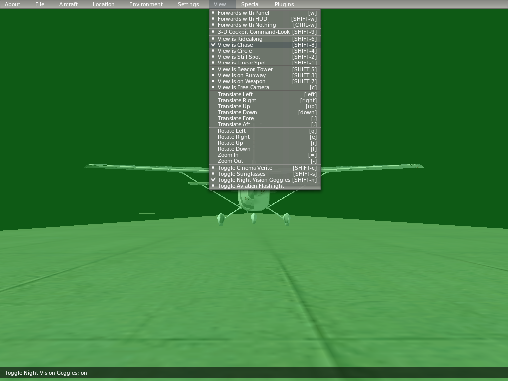
Menu items work. View is Chase and Night Vision chosen from the menu: both checked, the view switched (the green tint is a placeholder for the original's goggles).
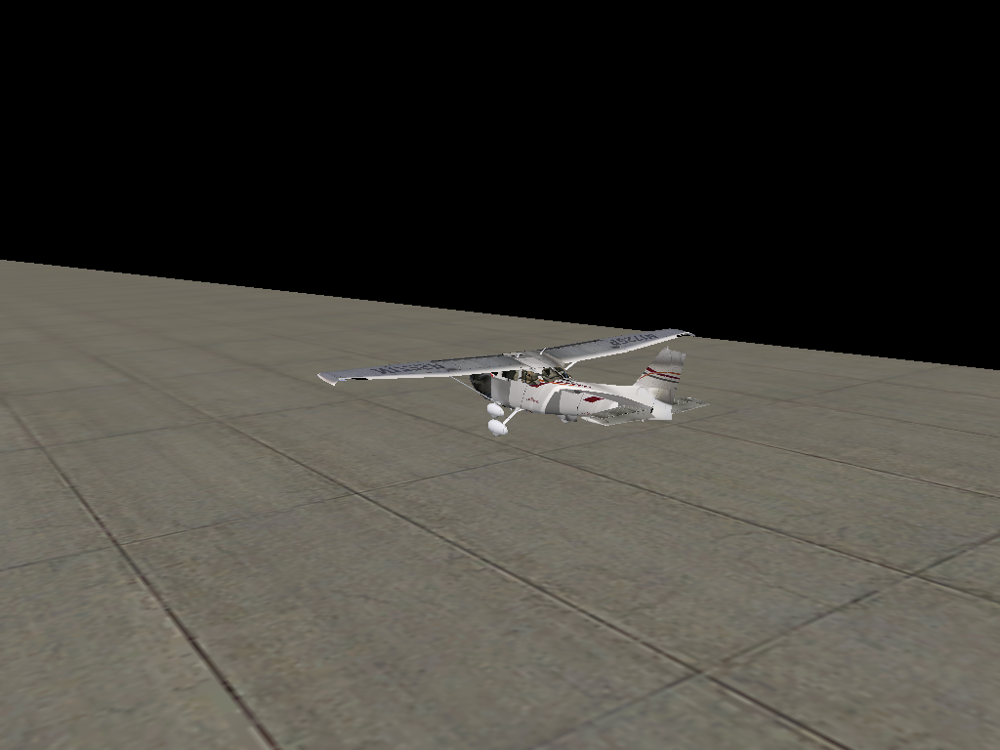
View is Circle, one of the 13 views; the arrow keys and , . = - move the camera as bound in the original's key file.
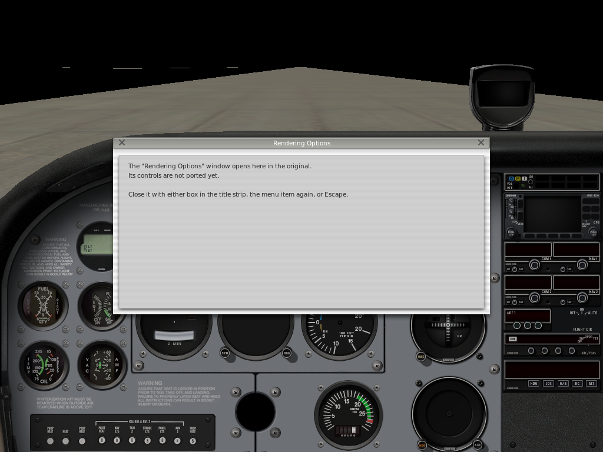
Windows open with the original's frame, title and close boxes; their controls are next.
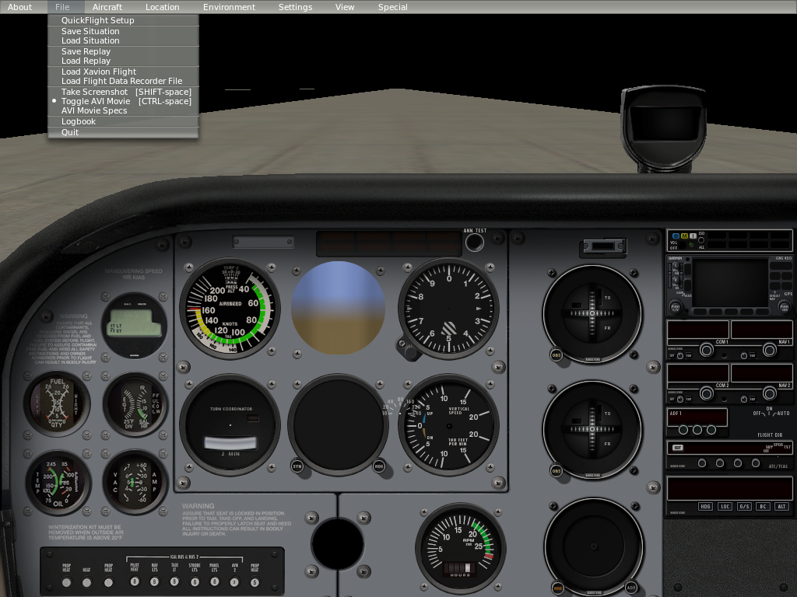
File menu. Same frame, separators and [SHIFT-space] keys as the original's own frame.
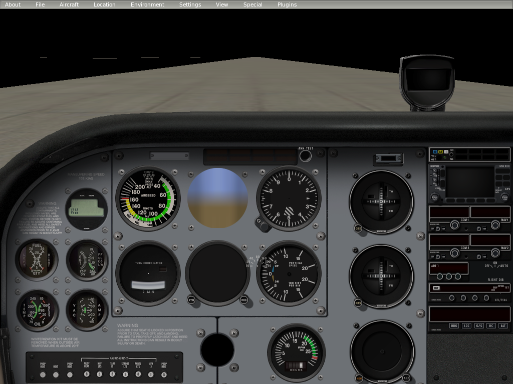
Cockpit and menu bar. 47.6 % of the frame within 16 of 255 of the original; the missing half is sky, terrain, needles and displays.
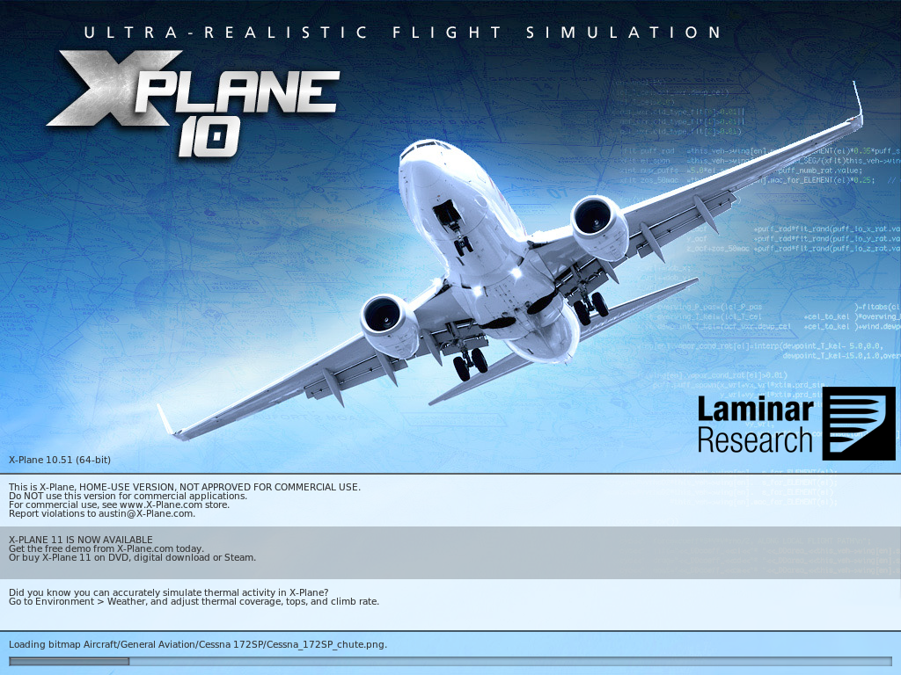
Loading screen. 99.0 % of pixels identical to the original's.
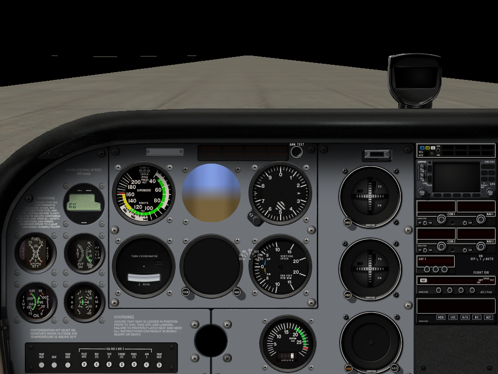
All 76 instrument faces, found through the instrument table read out of the original.
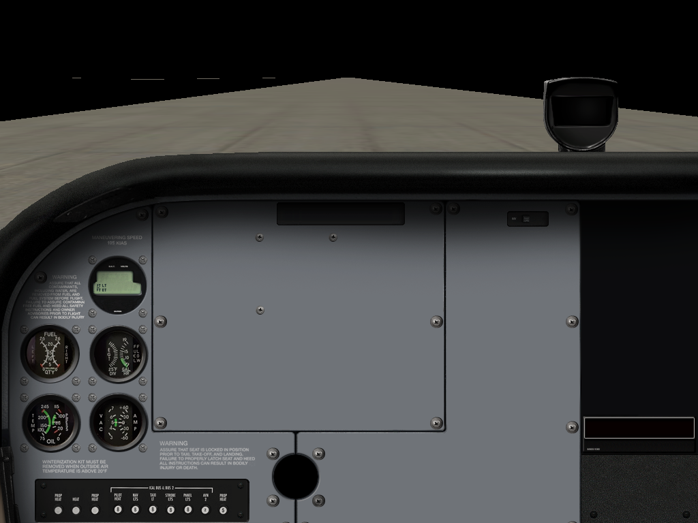
Panel background placed to the pixel, with the original's off-centre cockpit projection.
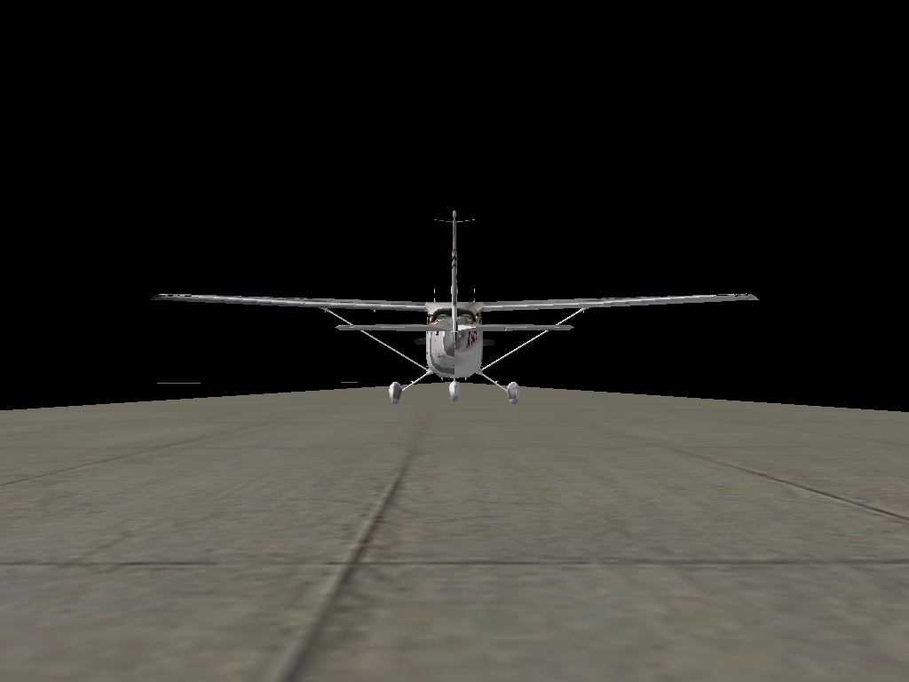
Chase view lit with the sun direction and colours read from the running original.
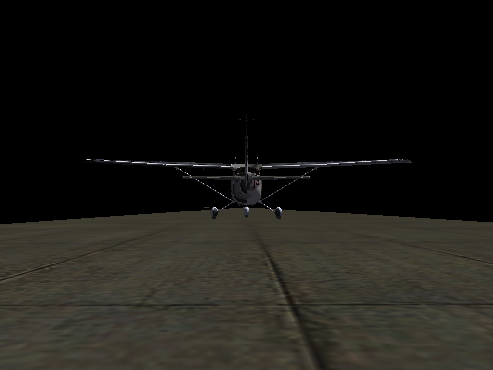
First frame with the original's camera and aircraft pose, before any lighting was ported.
There is no source for X-Plane. Behaviour is recovered from the shipped files and from the shipped binary, then re-implemented in Rust — never transliterated.
The original is scripted to take its own screenshots; a small in-process probe reads its camera matrices and light state so the port can be framed identically.
Fitted numbers are labelled as fitted, placeholders as placeholders. The compatibility ledger lists what is implemented, wired, content-checked and compared.
You need your own X-Plane 10.51 installation, Rust, and FreeType (brew install freetype pkg-config on macOS). Only macOS has been run so far.
export XP_INSTALL="/path/to/X-Plane 10"
cargo run -p xp # window: loading screen, then the cockpit
cargo run -p xp -- --list-aircraft # aircraft found in the install
cargo run -p xp -- --aircraft "Aircraft/General Aviation/Baron B58/Baron_58.acf"Or download the macOS app from the latest release: it finds your X-Plane 10 folder by itself (next to the app, in the usual places, or with Spotlight).
The window opens on the aircraft dialog; the menus work (Aircraft > Open Aircraft, View > Chase / Forwards with Panel, File > Quit). Nothing flies yet — the flight model is being ported.